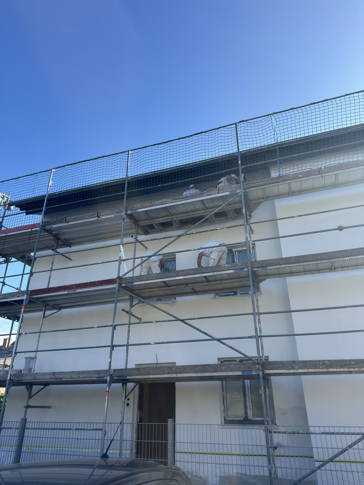

Fassadenbau
Von der Dämmung bis zum fertigen Oberputz – die komplette Hülle Ihres Hauses.
- Wärmedämm-Verbundsystem (WDVS)
- Fassadensanierung und Reinigung
- Riss-Sanierung und Ausbesserung
- Ober- und Strukturputz, Farbgestaltung
- Sockelputz und Spritzschutzzone
- Fassadenanstrich